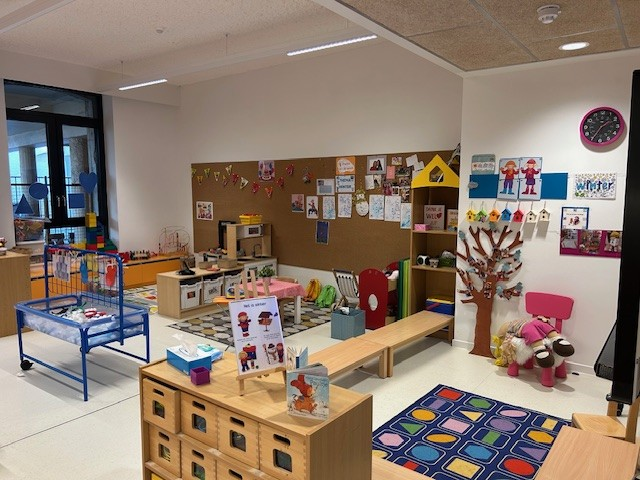
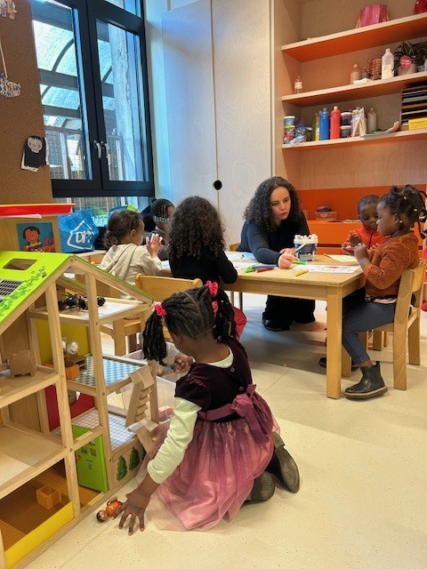
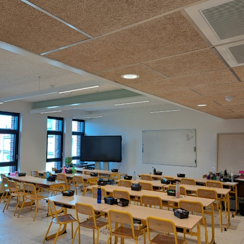
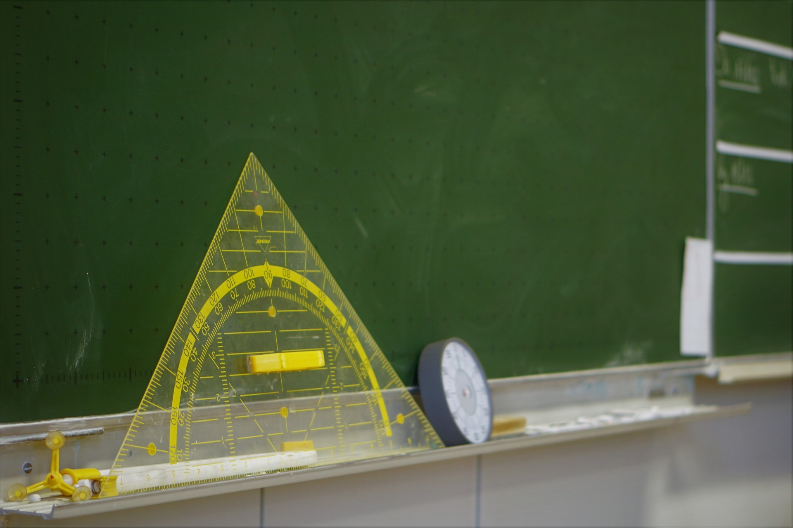
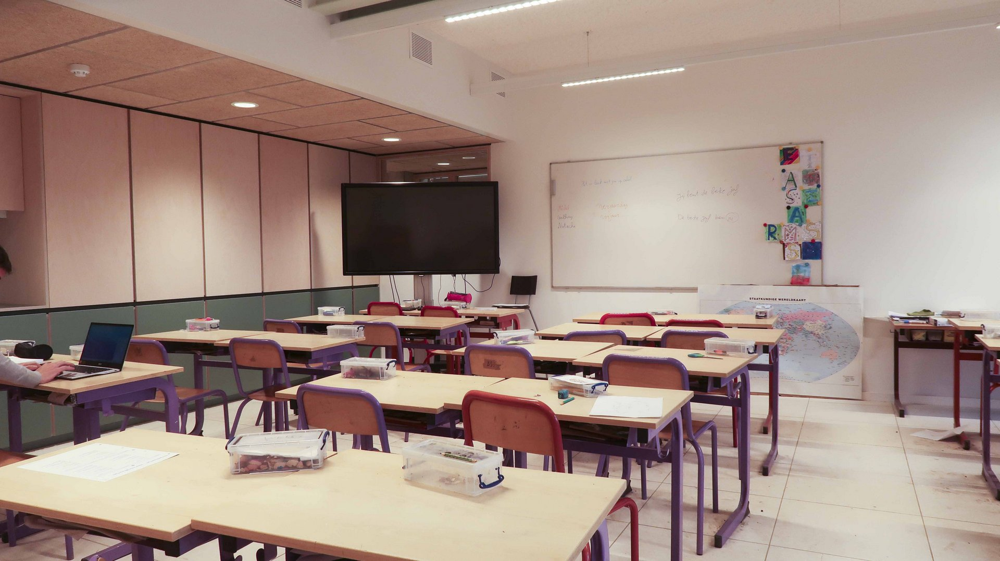

<!DOCTYPE html>
<html lang="en"></html>
<head>
	<link href="css/reset.css" rel="stylesheet" />
	<meta name="viewport" content="width=device-width, initial-scale=1.0" />
	<title>Basisschool Nieuwland - klassen</title>
  <link
			rel="icon"
			type="image/x-icon"
			href="./images/favicon-nieuwland.png"
		/>
	<link href="css/style.css" rel="stylesheet" />
	<link href="css/klassen.css" rel="stylesheet" />
</head>
<body class="bodyKlassen">
	<header>
		<div class="navWrapper">
			<div class="nav-top">
				<a href="index.html">
					
				</a>
			</div>

	
            <div class="navigation">
                    <div class="dropdown_1">
                    <button class="dropbtn_1">Onze Visies</button>
                    <div class="dropdown-content_1">
                        <a href="visie.html">Visie</a>
                        <a href="brede_school.html">Brede School</a>
                    </div>
                </div>
 
                <div class="dropdown_2">
                    <button class="dropbtn_2 active">Algemene Informatie</button>
                    <div class="dropdown-content_2">
                        <a href="praktische_informatie.html">Praktische Informatie</a>
                        <a href="inschrijven.html">Inschrijven</a>
                        <a href="klassen.html">Klassen</a>
                    </div>
                </div>
                <a href="nieuws.html" class="Nieuws">Nieuws</a>
                <a href="contact.html" class="Contact">Contact</a>
            </div>
		</div>
		</header>

</head>
<body>

<div class="KeuzeTitle">
    <h1>Klassen</h1>  
  </div>
<div class="layout-wrapper">
<div class="button-group">  
  <div class="Buttonrow1">
    <button onclick=showClassroom(1) id="button-1" class="active-button">Peuterklas</button>
    <button onclick=showClassroom(2) id="button-2">1ste kleuterklas</button>
    <button onclick=showClassroom(3) id="button-3">1ste leerjaar</button>
  </div>

  <div class="Buttonrow2">
    <button onclick=showClassroom(4) id="button-4">2de leerjaar</button>
    <button onclick=showClassroom(5) id="button-5">3rde leerjaar</button>
    <button onclick=showClassroom(6) id="button-6">4de leerjaar</button>
  </div>

  <div class="Buttonrow3">
    <button onclick=showClassroom(7) id="button-7">5de leerjaar</button>
    <button onclick=showClassroom(8) id="button-8">6de leerjaar</button>
    <button onclick=showClassroom(9) id="button-9">Lichamelijke opvoeding</button>
  </div>
</div>

<div class="buttonclassroom">
  <!-- Classroom information container for Peuterklas (set as active on load) -->
  <div id="classroom-1" class="classroom-info active">
    <div class="PeuterInfo">
      <h1>Peuterklas</h1>
      <div class="PeuterClassroom">
        
        <h2>
          Welkom bij de eerste stapjes in het onderwijs. 
          Juf Sezer zorgt voor een warm onthaal en wakkert een blijvende motivatie aan bij elke 2,5 jarige.
        </h2>
      </div>
      <div class="TeacherPictures">
        
        <div class="sezerText">
          <h1>Juf Sezer</h1>
          <h2>sdemir@bsnieuwland.be</h2>
        </div>
      </div>
    </div>
  </div>

  <!-- Other classroom containers (no changes here) -->
  <div id="classroom-2" class="classroom-info">
    <div class="PeuterInfo">
      <h1>1ste Kleuterklas</h1>
      <div class="PeuterClassroom">
        
        <h2>Hier begint een avontuurlijke ontdekkingstocht vol spel, verwondering en groei.
De allerkleinsten leren samen spelen, delen, zingen en hun eerste stapjes zetten in een wereld vol kleur en klanken.</h2>
      </div>
      <div class="TeacherPictures">
        
        <div class="sezerText">
        <h1>Juf Jade</h1>
        <h2>jlindekens@bsnieuwland.be</h2>
        </div>
      </div>
    </div>
  </div>

  <div id="classroom-3" class="classroom-info">
    <div class="PeuterInfo">
      <h1>1ste leerjaar</h1>
      <div class="PeuterClassroom">
        
        <h2>Welkom in het eerste leerjaar. Hier gebeuren de spannendste dingen! Voor het eerst in hun jonge leven leren kinderen lezen, schrijven en rekenen. De toegangspoort naar de wijde wereld!</h2>
      </div>
      <div class="TeacherPictures">
        
        <div class="sezerText">
        <h1>Juf Mieke</h1>
        <h2>mverhegge@bsnieuwland.be</h2>
        </div>
      </div>
    </div>
    </div>

    <div id="classroom-4" class="classroom-info">
      <div class="PeuterInfo">
        <h1>2de leerjaar</h1>
        <div class="PeuterClassroom">
          
          <h2>
            De focus verschuift van technisch lezen naar begrijpend lezen, van correct schrijven naar creatief schrijven.
            Samen met de kinderen ontdekken ze getallen tot 100 en leren ze er mee rekenen.
          </h2>
        </div>
        <div class="TeacherPictures">
          
          <div class="sezerText">
          <h1>Juf Charline</h1>
          <h2>cjanssen@bsnieuwland.be</h2>
          </div>
        </div>
    </div>
    </div>

  <div id="classroom-5" class="classroom-info">
    <div class="PeuterInfo">
      <h1>3de leerjaar</h1>
      <div class="PeuterClassroom">
        
        <h2>
          De maal - en deeltafels worden verder gautomatiseerd en er wordt voor het eerst gecijferd! 
          De leesmotor draait nu op volle toeren waardoor de kinderen al snel in de fantasiewereld van dikke boeken kunnen duiken. 
        </h2>
      </div>
      <div class="TeacherPictures">
        
        <div class="sezerText">
          <h1>Juf Elien</h1>
        <h2>egeeraerts@bsnieuwland.be</h2>
        </div>
        </div>
      </div>
    </div>
  </div>


  <div id="classroom-6" class="classroom-info">
    <div class="PeuterInfo">
      <h1>4de leerjaar</h1>
      <div class="PeuterClassroom">
        
        <h2>
          Voor het eerst maken we kennis met kommagetallen!
          De blik van de leerlingen wordt verruimd door openluchtklassen aan zee en door thema's als 'uitvindingen', 'Belgie' en 'Sport en spel'.
        </h2>
      </div>
      <div class="TeacherPictures">
        
        <div class="sezerText">
        <h1>Juf Katrien</h1>
        <h2>kvanasbroeck@bsnieuwland.be</h2>
        </div>
      </div>
    </div>
  </div>

  <div id="classroom-7" class="classroom-info">
    <div class="PeuterInfo">
      <h1>5de leerjaar</h1>
      <div class="PeuterClassroom">
        
        <h2>
        In het vijfde leerjaar ontdekken de kinderen via openluchtklassen de Westhoek en de bijbehorende geschiedenis.
        Daarnaast komen de leerlingen in contact met allerlei kunstuitingen.
        </h2>
      </div>
      <div class="TeacherPictures">
        
        <div class="sezerText">
        <h1>Meester Gaetan</h1>
        <h2>gcarlier@bsnieuwland.be</h2>
        </div>
      </div>
    </div>
  </div>

  <div id="classroom-8" class="classroom-info">
    <div class="PeuterInfo">
      <h1>6de leerjaar</h1>
      <div class="PeuterClassroom">
        
        <h2>
          In het zesde leerjaar worden de kinderen klaargestoomd voor het secundair onderwijs. Via een ruime waaier aan hulpmiddelen bij de studiekeuze worden leerlingen en ouders voorbereid op de grote overstap naar een secundaire school.
        </h2>
      </div>
      <div class="TeacherPictures">
        
        <div class="sezerText">
        <h1>Meester Willem</h1>
        <h2>wdehertogh@bsnieuwland.be</h2>
        </div>
      </div>
    </div>
  </div>

  <div id="classroom-9" class="classroom-info">
    <div class="PeuterInfo">
      <h1>Lichamelijke Opvoeding</h1>
      <div class="PeuterClassroom">
        <h2>
          Onze kinderen krijgen minstens 3u bewegingsopvoeding per week en dat is volkomen terecht! 
  Gekende sporten als voetbal, volleybal en basketbal, maar ook nieuwe sporten als grappling en muurklimmen komen aan bod
        </h2>
      </div>
      <div class="TeacherPictures">
        
        <h1>Meester Michel</h1>
      </div>
    </div>
  </div>
</div>
</div>

</div>

  

<script src="/js/classroom.js"></script>


<div class="footer">
        <div class="wrapper">
            <div ></div>
 
            <div class="icon-line-1"><p>0498596556</p></div>
 
            <div class="icon-line-1"><p>directie@bsnieuwland.be</p></div>
 
            <div class="icon-line-1"><p>Basisschool Nieuwland</p></div>
 
            <div class="links-footer">
 
                <div class="item_row_1">
                    <a href="visie.html" class="visie-footer">Visie</a>
                    <a href="brede_school.html" class="bredeschool-footer">Brede School</a>
                    <a href="klassen.html" class="klassen-footer">Klassen</a>
                    <a href="inschrijven.html" class="inschrijven-footer">Inschrijven</a>
                </div>
 
                <div class="item_row_2">
                    <a href="contact.html" class="contact-footer">Contact</a>
                    <a href="nieuws.html" class="nieuws-footer">Nieuws</a>
                    <a href="praktische_informatie.html" class="praktischeinformatie-footer">Praktische Informatie</a>
                </div>
            </div>
    </div>

	<script src="js/index.js"></script>
</body>
</html>